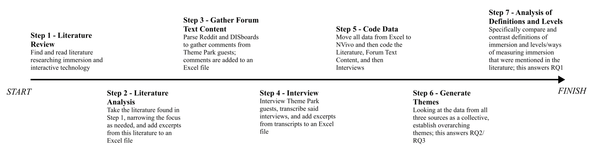
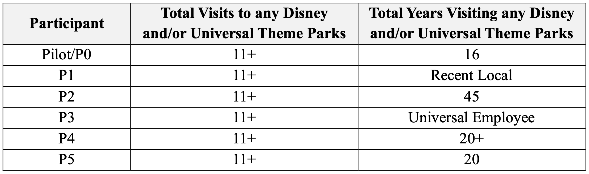
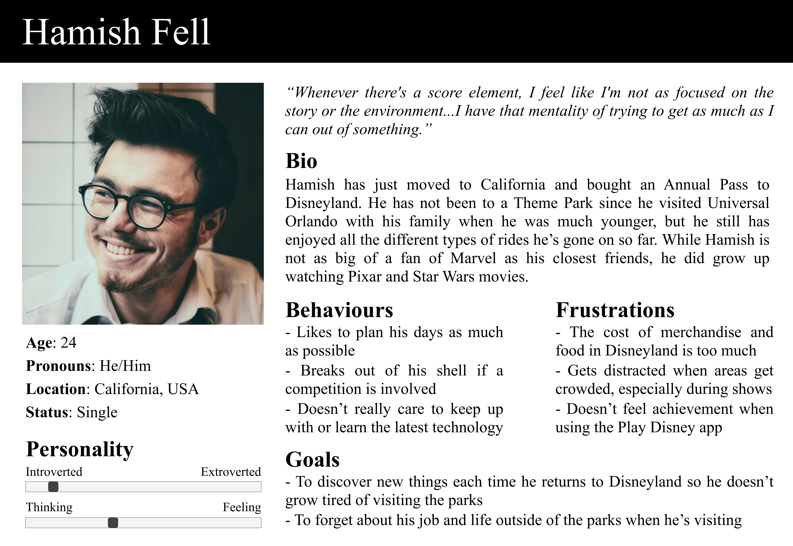
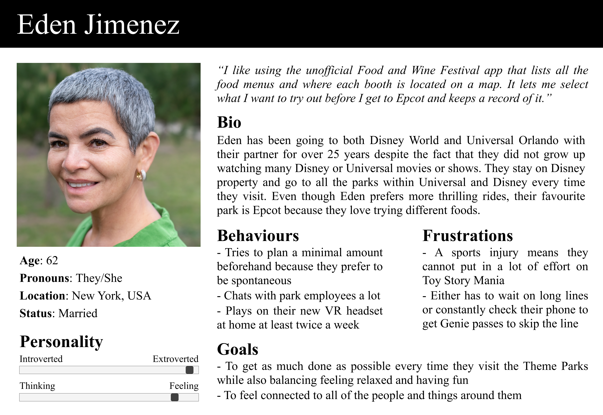

The following is going to be an incredibly condensed version of my dissertation.
If you would like to see my full report, please send me an email at
raveena.s.jain@gmail.com
and let me know whether you are a potential employer or student looking
to read it.
Goal
To understand what immersion means, specifically in physical spaces, and
how design choices and interactive technology impacts the levels and feelings
of immersion in physical environments.
Objectives
- [O1] To establish a definition of immersion for physical environments
and to build upon that definition to classify different levels of
immersion.
- [O2] To form a set of Design Principles and Guidelines that could
be used to create immersive physical environments that integrate the
use of interactive technology.
- [O2.1] Design Principles: high-level and focusing on the overall,
key elements needed to establish an immersive environment and
increase the quality and level of immersion.
- [O2.2] Design Guidelines: detailed ways of incorporating interactive
technology to create an immersive environment and accomplish
the corresponding Design Principle.
Research Questions
- [RQ1] Considering existing literature studying physical and virtual immersive environments, how can immersion be defined?
- [RQ1.1] How are levels of immersion, for physical environments, established, differentiated, and defined?
- [RQ2] What qualities of physical environments impact the feelings of immersion within those environments?
- [RQ2.1] How does the use of technology affect the qualities that make a physical environment immersive?
- [RQ3] How can interactive technology be used to increase feelings of immersion in physical environments?
Tools
NVivo, Otter, Zotero, Microsoft Office (Word, Excel, Outlook, OneDrive),
Remote Interview Moderation (Microsoft Teams, Discord, Facebook Messenger)
and Recording (QuickTime) Software
Immersion is not a new or unpopular idea. However, definitions vary depending
on context. There are also a number of existing models of immersion, with
different concepts that may overlap or feed into one another. Despite these
differences, it is accepted that there are different levels of immersion;
however, there is no consensus on how those levels are distinguished. Some
common themes deal with engagement of the senses, narrative, presence, and
creating a "world."
Interactive elements are common in immersive spaces. A popular example is
the wands in the Wizarding World of Harry Potter (a Universal Theme Park)
that allows guests to "perform" spells.

Literature Analysis
Google Scholar and ACM were used to find the literature. Studies that were
too general and/or looked at relevant environments or technology, like VR,
but did not tie the research back to immersion or the effects of interactivity
were rejected. Each saved paper was read and quotes were taken that pertained
to definitions [RQ1], levels [RQ1.1], and qualities of immersion/immersive
environments and interactive technology [RQ2/RQ3]. Quotes that defined immersion
or interactivity, mentioned or implied levels of immersion, touched on something
the authors thought contributed to or affected immersion or interactivity,
and/or quotes that mentioned the effects of interactive technology on users
or the environment were considered relevant. For any literature that looked
to quantify immersion (i.e. questionnaires), because my research was looking
for qualities of immersion, notes were taken on what aspects of immersion
the questions pointed to rather than any qualitative results.
Forum Text Content
Reddit and DISboards were used to source the Forum Text Content. Four specific
Subreddits were parsed – r/Themepark, r/disneyparks, r/universalstudios,
and r/london (was chosen to keep the scope related to immersive experiences
manageable). The first three Subreddits were more general so comments would
encompass any of the Universal and/or Disney Parks worldwide. In order to
keep with the sites Terms and Conditions, a member of City, University of
London’s ethics committee stated the use of direct quotes was acceptable
and, to maintain some level of anonymity, no usernames or direct links were
cited. The goal was to find comments not just saying ‘I find X ride interactive’
or ‘I find Y land immersive,’ but to use comments that included some sort
of reasoning as to why those feelings were present.
Interviews
Six remote, semi-structured interviews, each lasting roughly 45 minutes,
were conducted. Potential participants completed a Screener and chosen participants
were sent Participant Information Sheets and Informed Consent Forms to sign.
Participants had to meet the following requirements:
- Aged 18 or older.
- Fluent or working proficiency in English.
- Have visited any of the Disney and/or Universal Theme Parks within
2 months of a potentially scheduled interview OR have visited any of
the Disney and/or Universal Theme Parks within the past 1 year and
have made at least 11 visits in total by either going at least once
a year or being a local.
- Have used at least one of the following interactive technologies on their last visit:
- Disney: MagicBand+, Play Disney Parks App (the Star Wars Data Pad and DuckTales World Showcase Adventure), Spiderman WEB Adventure/Web Slingers, Star Wars Smugglers Run, Toy Story Mania, Buzz Lightyear Space Ranger Spin/Astro Blasters, Monster’s Inc. Ride and Go Seek, Monster’s Inc. Laugh Floor, Turtle Talk with Crush, Galactic Starcruiser.
- Universal: Harry Potter Wands, Power Up Bands, Men In Black: Alien Attack, Mario Kart: Koopa/Bowser’s Challenge.
While recruitment was attempted on Facebook, DISBoards, Instagram, and LinkedIn,
all participants were found through Reddit and personal contacts.

A script was used for the interviews and was informed by the Literatre Review,
especially the Immersive Experience Questionnaire [IEQ]. The script focused
on:
- What drew participants to Theme Parks.
- If participants saw Theme Parks as immersive environments.
- How the interactive technology within Theme Parks contributed to or detracted from feelings of immersion.
Data Analysis
This research took a “content analysis” approach and the main method of
qualitative analysis was Thematic Analysis where common themes, using an
inductive approach, were pulled out from each data source as the data determined
what codes were relevant. Most codes were established by the Literature but,
as new data was read and new trends formed, new codes were added from both
other sources. No element of data was restricted to a single parent code;
this helped inform where codes thematically overlapped. Ideas within different
codes that supported each other and/or resulted in similar qualities of
immersion were combined into an overarching theme.
Qualities of Immersive Environments
The data was analyzed and the following list of trends was found. This
is formatted as the overarching theme and a short, one sentence description.
- "The Disney Bubble" - Removal from the Outside World: Guests are transported to a new world that makes them forget about the real one they just came from.
- Theming: This is what made a world believable to guests.
- Story/Narrative: Guests should feel as though they are a part of the story the world is telling.
- Details: These contribute to the story and world and encourage exploration.
- Realism and Suspension of Disbelief: Social Realism is “how likely” the detail in the world would “occur in real life;” Perceptual Realism is not about believing the world you were in could actually exist in real life, but that everything about the environment you entered – the buildings, rides, food, employees, interactions, etc. – was realistic to the world being created.
- Fields of View: What guests can and cannot see both influence immersion, noting that immersion was decreased if a field of view included details that were not “relevant” to the world.
- What Makes a Guest: Existing attachment to an intellectual property, such as being a fan of Star Wars, and nostalgia can positively factor into the emotions a guest feels. The social impact of other guests can be both positive and negative; for example, other guests caused frustrations on a ride where guests were seen as separate from the game while, on a different ride, everyone intentionally had an impact on the overall experience making the influence of others positive.
- Performance: Environments themselves were considered a stage and guests and employees were part of the show.
- Personalization, Control, and Responding to the Guest: Guests should be placed at the centre of the story where outcomes are directly influenced by their actions.
- Resulting Engagement and Involvement: Tied to the previous point, feelings of involvement connected guests to the environment, increasing immersion.
- Ways of Interacting: While there are several forms of interactions, regardless of the type, they must be well integrated into the environment. Interactions also increased cognitive engagement, which helped guests suspend disbelief; balance was still needed to limit physical and mental workload.
- The Use of Screens: Screens were more effective when they were well integrated into the environment, for example alongside physical effects, and when they were reactive to guests' actions.
- In Progress:
- Barriers and Breakdowns:
- Physical and Mental Effects and Feelings:
- Variety, Loyalty, and Newness:
Contributions of Interactive Technology to Immersive Environments
Interactive technology can actively bring guests into the world by creating
both social and perceptual realism; it can bring to life interactions that
could not "realistically" or "normally" exist. Interactive technology affects
immersion through the visibility of its feedback/outputs and creating
variation through those outputs. It also has the potential to make the guests
feel as though they are in control.
However, if the interactive technology is not intuitive to use, it can raise
barriers to immersion instead of lowering them. This is also true of one of
the most widely used forms of interactive technology, smartphones. For one
participant, using his smartphone made him feel less immersed as he brought
an element of "the real world into [the] fake world” he was supposedly transported
to. However, for other participants, the use of their smartphones facilitated
their day, helping them become more immersed in the world around them.
These are examples of 2 types of Theme Park guests to show how varying the
qualities of guests who visit and/or are interested in immersive environments
may be.


To be immersed in a physical environment is to be transported to a new reality
that encompasses the visitor, both physically and mentally, though the use
of physical objects and interactions that engage all the senses.
Low
- Not all-encompassing; the visitor does not believe that the environment
could exist as a realistic world of its own.
- Closest to the reality the visitor just came from; they are still
frequently reminded of that “outside world,” both physically and mentally,
but will see a few elements that start to build a new reality.
- Minimal sensory input via limited details and interactions; the environment
does not have the potential to engage all the senses.
Medium
- All-encompassing feelings in most of the space; a majority of the
elements help visitors feel as if the environment could exist as a
realistic world of its own.
- Occasionally reminded of the reality the visitor just came from; this
could be from external distractions and/or a lack of details within
the space that attract attention.
- Frequent sensory input via an increased number of details and interactions;
the environment has the potential to engage multiple senses at once.
High
- Constantly encompassed by the new reality; the visitor always believes
they are in an environment that could exist as a realistic world of
its own.
- Physically and mentally visitors only see and think of elements related
to the reality they have entered.
- At least one sense that draws the visitor into the environment is
always engaged; multiple senses will frequently be engaged at once via
an appropriate number of details and interactions.
The following format is used:
- Principle
- Consider the goal of the environment and what level(s) of immersion
would be most appropriate.
- Establish your audience – visitors have different comfort levels with
technology, may make repeat visits, and may have pre-existing emotional
connections with elements that make up the environment.
- Balance the complexity of the environment with the amount of planning
needed; the experience begins as soon as someone becomes interested
in visiting your environment – do not make excessive planning necessary
and create an easy planning experience for those who wish to do so.
- Use technology to make all tools related to planning accessible
from one place both in the planning stages and when visiting the
environment.
- Consider the longevity of anything placed in the environment.
- Have the resources to update/fix objects as they break and give
in-world reasons for why technology is broken if it cannot immediately
be fixed.
- Prevent technology from feeling out of date by choosing devices
that can be updated, swapped, or customized to fit the changing mental
models and expectations visitors will have as technology evolves.
- Animations on a screen can be updated as software improves.
- Establish the world your visitors will be entering and the “lore”
of that world – what is realistic to the world, what is the overall
theming, and how much of that world do you want to be something new
versus something visitors already have an established understanding
of.
- Make the environment something unique that visitors cannot replicate
on their own (e.g. from their own home) by using interactive technology
to create interactions that are realistic for that world, even if
they cannot occur in “real life.”
- Giving visitors the ability to performs spells via wands.
- Prioritize the effect the inclusion of technology has on the world;
don’t just include a certain type of technology for the sake of
using it.
- Add detailing that helps visitors understand the world they have entered –
this should include more obvious details as well as hidden ones that
could be found through exploration.
- Take advantage of the fact that technology is not static; objects
can change for various reasons to add more detail.
- A decoration could automatically shift in style depending on the
time of day.
- Minimize the impact of distractions (sights, sounds, and smells),
especially ones you might not have direct control over (e.g. crowds),
through the use of physical barriers.
- Enhance the effect of digital interactions with physical objects;
what visitors interact with and/or the result of those interactions
should include something physical.
- Use interactive technology to involve the visitors to draw their
attention to the reality being built and away from the reality they
recently “escaped.”
- Walking past a window triggers a change in the objects visible
in the window, catching a visitor’s eye and adding different elements
to the world.
- Use elements of the world to build a narrative and include interactions
that both bring visitors into that story and allow them to have an impact
on the story and/or world.
- Allow visitors to trigger changes in the environment that have a
lasting effect.
- If there’s a Harry Potter spell that lets visitors turn books
in a shop into birds, as the day goes on, visitors should see more
and more birds flying around the shop and hear louder bird noises.
- Move the narrative along via interactive technology – past interactions
visitors have should remain relevant for the rest of their visit.
- Create a personalized experience and make interactions relevant to
those directly participating as well as those observing – a change in
environment should help build the world for anyone who sees it.
- Make different interactions, even within the same space, have different
results based on the visitor using the interactive technology to lower
the chances of seeing a repeat interaction.
- Use interactive technology that captures motion; if a visitor
makes a big movement, multiple elements change whereas a smaller
movement only alters one element.
- Allow for spontaneity during a visit and build an environment with
enough space so visitors can choose how to move through it.
- Give visitors the opportunity to set their own goals and/or have access
to challenges that result in a sense of accomplishment.
- Incorporate multiple instances (this can include different ways
of interacting to suite different types of visitors) of interactive
technology; this also adds variation and prevents crowding around
one experience.
- A space has five holograms that have conversations and a visitor
sets a goal to speak to all five.
- Integrate the use of smartphones into the theming.
- If a guest is in Animal Kingdom in Disney World, change the interface
of the Disney planning app to be nature themed; if they are in Tomorrowland
in Magic Kingdom, make the design more futuristic.
- Give feedback to the visitor for every intentional interaction.
- Offer engaging reactions based on the visitor’s actions.
- A large animatronic could be more suitable to pop out from a hidden
spot and scare someone momentarily while a character on a screen
can show more facial emotions and movement when conversing with
a visitor.
- Test any interactive technology used in the environment to make sure
there is no confusion or usability issues.
Engage multiple senses at once.
- Depending on the theming, interactive technology used, and visitors’
actions, technology can respond with visual, auditory, olfactory,
tactile, and/or gustatory actions.
- Trigger emotions and create an emotional connection to the space.
- Allow guests to interact with objects, characters, or people they
might not normally be able to or to perform meaningful actions that
otherwise would not be possible.
- Use 3D (portable) projection mapping to bring loved animated
characters, like Pascal the chameleon from a Disney movie, to
life in a way that allows for his face to show emotions based
on visitors’ actions.